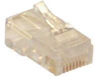
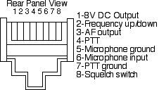

Recovered article. HTML body is from Common Crawl (text only); images came from the Sep 2022 iOS PDF:
Cables & Interfacing.pdf ·
6 extracted images & links ·
6 of 6 images merged inline (aspect-ratio matched). Original src preserved on each
<img> as
data-original-src.
Contents: Basics; Remote Cables; Modular Plugs & Jacks; If You Just Have To Make Your Own;
Basics
In an effort to minimize duplication, information on power wiring in included in the Wiring article. The information includes proper fusing, splicing, shortening, and crimping connectors. Just as important, is minimizing voltage drop, and the article covers that issue as well.
Microphone cords tend to be brand specific. Unfortunately, too many of them look like CAT5 cables, prompting folks to use it as a cheap substitute to the more expensive factory units. Sometime this works, and sometimes it doesn't. And sometimes, damage can be caused to the transceiver in question when the incorrect cable is used. Therefore, it is always best to bite the bullet, and pay the premium for the right stuff!
All HF mobile transceivers, and quite a few FM ones too, have ports designed to connect to the outside world. Called by a variety of names, they're meant to interface transceivers to programing and email computers, antenna controllers, amplifiers, and even the Internet! And no two brands are alike! Here too, it is always best to use cabling from the specific manufacturers, because the ports (sockets really) are different too. If you don't have the an owner's manual showing which port pins are which, try Roy Fettsome's, G4WPW, site. Be prepared to wait a bit, as the page has dozens of photos.
☜Return☜
Remote Cables
While DC cabling doesn't need to be shielded, most other amateur radio cabling is shielded, and for very obvious reasons. Unfortunately, some enterprising amateurs think it is okay to use Ethernet CAT5 cable for their interconnections. It isn't. Yes, you can buy shielded CAT5 cable, but the vast majority of it is solid conductor, and should never be used in a mobile environment.
There is another little problem with CAT5, which very few think about, and that is its construction. It isn't 8 separate strands, it is actually 4 pair, with each pair separately twisted together, and at different pitches. Depending on the use, and how it is wired (ready-made CAT5 cable assemblies come in several different wiring configurations), crosstalk between the conductors is almost a given, and there is always a chance of a crossover cable shorting the regulated supply to ground. Just in case you missed the point, using a ready-made CAT5 cable in your mobile just might work. Then again, it might not, and you'll be in for an expensive fix!
 The similar caution should be used with MFJ's interconnect cables, like those supplied with their ALS-500 amplifier remote kit. They are indeed 8 conductor, silver satin telephone cables, but the connectors are installed differently; they're straight, not crossed over. This is one of the very few cases where you can shorten them, and install a new RJ45 plug with a standard telephone crimp tool. That is, as long as your observe the polarity! More on this in the next section.
The similar caution should be used with MFJ's interconnect cables, like those supplied with their ALS-500 amplifier remote kit. They are indeed 8 conductor, silver satin telephone cables, but the connectors are installed differently; they're straight, not crossed over. This is one of the very few cases where you can shorten them, and install a new RJ45 plug with a standard telephone crimp tool. That is, as long as your observe the polarity! More on this in the next section.
Proprietary remote cables should never be lengthened. Doing so is a good way to destroy a $50 cable! If a longer one isn't available, the rethink your mounting locations. Unlike power cables, remote cables are subject to common mode problems. Here ferrites work very well if multiple turns are used. See the article for further details.
There is a very important caveat with respect to the IC-7000 (and older IC-706). Make sure the grounding screw for the remote cable is installed. It is very small (2 mm x 6 mm), and is depicted on page 16, center drawing, Figure 2, in the Owners Manual (reproduced at left). Leave it out, and you're in for major RFI problems. The 706 cable is slightly different (see page 10), but the same caveat applies.
☜Return☜
Modular Plugs & Jacks

A lot of the newer transceivers use modular jacks and plugs for microphone and/or remote cables. While they appear to be RJ45 telephone type jacks and plugs, they aren't! In fact, modular jacks and plugs come in about 50 different configurations. Some are designed for round cables, some for oval cable, some for flat cables, and there are different types for solid and stranded wire. There are keyed and unkeyed ones; ones with external cord grips; and ones for heavy-duty use. Selecting the correct one isn't as easy as it appears.
Adding a little insult, MFJ, and a couple of other manufacturers, use RJ45 telephone-style jacks, plugs, and even silver satin, 8 conductor telephone wire as interconnect cabling. The problem is, they aren't wired like telephone cables, and arbitrarily substituting a telephone cable will garner you an expensive repair!
The tools needed to crimp the various types are also slightly different. One designed for round cable will not crimp a flat cable correctly, and one for flat cable can actually cut through a round cable. There are some 8 different die sets to accommodate them all.

There are other considerations too. Referring to the Icom microphone jack wiring diagram (roughly 4 times actual size), you can see that the pins are very close together (approximately 1/32"). If you're fat fingered, you may not be able to properly position and hold the wires in the corresponding plug during crimping. The first time I tried it, I went through four plugs before I got it right. And note there are separate ground connections for the microphone and the PTT.
Pin 3 is the audio output on an Icom IC-706MkIIg. On the IC-7000/7100, this pin is used as a microphone "sense" pin which tells the radio an HM-151 (stock mic) is attached. If you plug in a Heil headset designed for the IC-706, the radio thinks it is an HM-151. What's more, the requisite audio input levels are very different, so the transmitted audio will be distorted. Incidentally, Heil has a headset designed especially for the IC-7000/7100, however its higher output does require a lower gain setting.
The microphone input on the IC-7000/7100, has an 8V DC regulated supply fed to it (this is true of Yaesu and Kenwood as well). Although there is an internal resistor in series with this lead, shorting it to ground can cause both the series resistor and the 8V regulator to over heat causing one or both to eventually fail. Further, shorting pin 1 to ground will cause the 8V regulator to instantly fail! Either way, doing so is an expensive fix as they are both surface-mounted devices, and require special tools to replace.
Pin 2 is a multi purpose input. Shorted to ground during receive, it causes the frequency to go up. Placing a 470 ohm resistor in series to ground causes the frequency to go down. In CW mode, a 3.9k ohm resistor to ground is the dit side of the paddle (or straight key connection), and a 2.2k ohm resistor is the dah side of the paddle (information about the latter can be found on page 34 of the owners manual). There is also an audio out and a squelch switch. All of these possible uses for the jack makes it an inviting target for the uninformed. Incidentally, the maximum current for the 8V line and the sink for the squelch switch is 10 mils! The former is not intended to power ancillary equipment like TNCs.
Everyone should use commercially-available interconnect cables when ever possible. For example, Icom makes an adapter to convert the microphone jack from modular to an eight pin standard microphone jack for use with their SM8 and other desk microphones.
If you're interfacing through the microphone port of an Icom IC-7000/7100 as some ancillary devices do, you might need to know what's inside the HM151 microphone, so here's the schematic. The data protocol for the HM151 is located here in PDF. It should be noted that RPF, the company who made the TalkSafe®, is no longer in business. By the way, although the IC-7000/7100 has two microphone ports, using both of them at the same time can cause data corruption.
☜Return☜
If You Just Have To Make Your Own
I don't suggest making up your own modular extension cables in the first place as most of them are of proprietary material and configuration. Using pre-made telephone cables and splices isn't the answer either. Ethernet cables come is straight and crossover configurations, and although their splices look like telephone splices, they're not wired the same. This is one area of amateur radio where you shouldn't scrimp, as the potential damage costs far exceeds the procurement costs of most cables. If you just can't help yourself, and you just have to try, here is a suggestion or two.
 DigiKey and Mouser sell the proper modular plugs. They are listed under Modular Connectors and Jacks in their catalogs and on-line. There are about 20 different configurations, and about 25 more they don't list.
DigiKey and Mouser sell the proper modular plugs. They are listed under Modular Connectors and Jacks in their catalogs and on-line. There are about 20 different configurations, and about 25 more they don't list.
The best type modular plugs to use, are those made by Bomar, under the trade name EZ-Plug®. These have drilled through holes in the end of the plug allowing the wire to protrude. This helps in assuring the plugs are correctly wired before crimping. The Mouser part number, 678-300568EZ, may be used with stranded, round cable. If you use these specific plugs, and do not own the correct EZ crimping tool, you can use an X-acto knife to trim off the extra wire to avoid shorts.
 DigiKey and Mouser both carry the proper crimping tools and dies, and prices range from about $50 to well over $200. Some of the best modular crimping tools are made by AllenTel company. They make about a dozen different ones for the various types of modular plugs. Make sure you select the correct one for the type of cable (flat or round), and for the number of pins (usually 8). At about an average of $75, they're not inexpensive, but quality never is. Correct crimping instructions are included with both the Bomar EX-plugs, and the AllenTel crimpers.
DigiKey and Mouser both carry the proper crimping tools and dies, and prices range from about $50 to well over $200. Some of the best modular crimping tools are made by AllenTel company. They make about a dozen different ones for the various types of modular plugs. Make sure you select the correct one for the type of cable (flat or round), and for the number of pins (usually 8). At about an average of $75, they're not inexpensive, but quality never is. Correct crimping instructions are included with both the Bomar EX-plugs, and the AllenTel crimpers.
Here's a caveat. Do not use the cheap Radio Shack crimper. It is designed for flat, stranded telephone cable (Silver Satin), yet they'll tell you it is okay for Ethernet cable. It isn't! And it will not properly crimp any of the connectors when solid wire is used. If you squeeze hard enough (as suggested in the instruction sheet) you run the risk of separating the insulation which can cause a short (to say nothing about breaking the plastic handles). It just isn't worth taking the chance.
Remember to check your connections for continuity, and shorts before attaching the cables to your hardware. A pair of pre-wired jacks are a good solution for checking continuity. Also, make sure the wire is properly restrained by the strain relief. Whatever you do, just take your time, and be safe rather than sorry!
☜Return☜
Home
 The similar caution should be used with MFJ's interconnect cables, like those supplied with their ALS-500 amplifier remote kit. They are indeed 8 conductor, silver satin telephone cables, but the connectors are installed differently; they're straight, not crossed over. This is one of the very few cases where you can shorten them, and install a new RJ45 plug with a standard telephone crimp tool. That is, as long as your observe the polarity! More on this in the next section.
The similar caution should be used with MFJ's interconnect cables, like those supplied with their ALS-500 amplifier remote kit. They are indeed 8 conductor, silver satin telephone cables, but the connectors are installed differently; they're straight, not crossed over. This is one of the very few cases where you can shorten them, and install a new RJ45 plug with a standard telephone crimp tool. That is, as long as your observe the polarity! More on this in the next section.

{kind=link}
{kind=link}